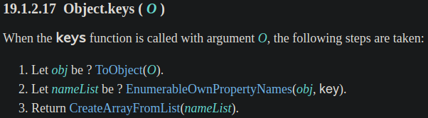
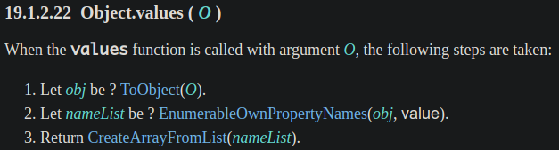
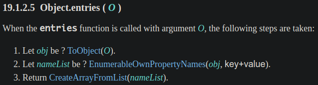
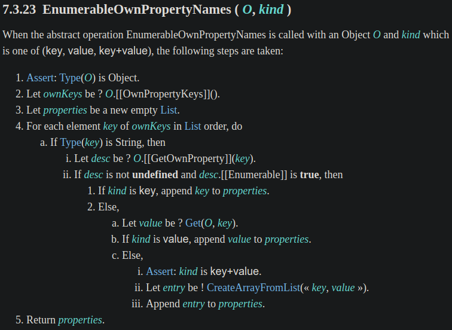
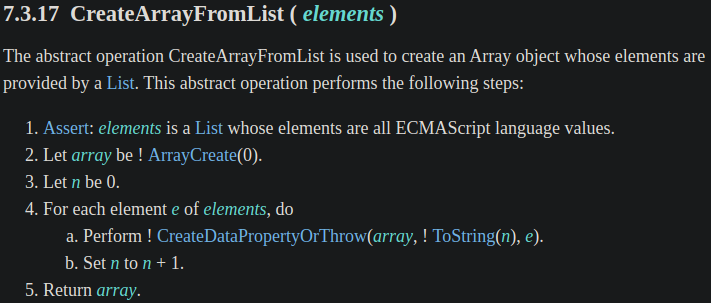

<!DOCTYPE html><html><head><meta charset="utf-8"><title>JavaScript 之旅 (4)：Object.keys() &amp; Object.values() &amp; Object.entries() | Titangene Blog</title><meta http-equiv="X-UA-Compatible" content="IE=edge"><meta name="viewport" content="width=device-width,initial-scale=1,maximum-scale=1"><meta name="HandheldFriendly" content="True"><meta name="apple-mobile-web-app-capable" content="yes"><meta name="author" content="Titangene"><link rel="shortcut icon" href="/favicon.ico"><link rel="alternate" href="/atom.xml" title="Titangene Blog"><meta name="description" content="有時要將 JS 物件轉成其他資料結構，所以需要迭代物件中的所有 property，過去會用 for-in 陳述句，但只想列舉 own property，就必須用 hasOwnProperty() 才能解決。後來 ES5 新增的 Object.keys() 解決了非 own property 的問題，但還是要手動透過 property name 來存取 value，不方便！終於在 ES2017 (E"><meta property="og:type" content="article"><meta property="og:title" content="JavaScript 之旅 (4)：Object.keys() &amp; Object.values() &amp; Object.entries()"><meta property="og:url" content="https://titangene.github.io/article/javascript-object-keys-values-entries.html"><meta property="og:site_name" content="Titangene Blog"><meta property="og:description" content="有時要將 JS 物件轉成其他資料結構，所以需要迭代物件中的所有 property，過去會用 for-in 陳述句，但只想列舉 own property，就必須用 hasOwnProperty() 才能解決。後來 ES5 新增的 Object.keys() 解決了非 own property 的問題，但還是要手動透過 property name 來存取 value，不方便！終於在 ES2017 (E"><meta property="og:locale" content="zh_TW"><meta property="og:image" content="https://titangene.github.io/images/cover/javascript.jpg"><meta property="article:published_time" content="2020-09-19T08:30:56.000Z"><meta property="article:modified_time" content="2020-09-20T05:43:13.088Z"><meta property="article:author" content="Titangene"><meta property="article:tag" content="IT 鐵人賽"><meta property="article:tag" content="ECMAScript"><meta property="article:tag" content="w3HexSchool"><meta name="twitter:card" content="summary_large_image"><meta name="twitter:image" content="https://titangene.github.io/images/cover/javascript.jpg"><meta name="twitter:creator" content="@titangeneTW"><meta name="twitter:site" content="@titangene_blog"><meta property="fb:admins" content="100001106016019"><meta property="fb:app_id" content="2470546159839111"><meta property="og:image:width" content="1200"><meta property="og:image:height" content="630"><meta name="google-site-verification" content="AaJ39L7h-nWwJjXJMhAMtXSF6H6BUgGWXC80kYvLic8"><link href="https://fonts.googleapis.com/css2?family=Roboto&display=swap" rel="stylesheet"><link href="https://fonts.googleapis.com/css?family=Source+Code+Pro&display=swap" rel="stylesheet"><link rel="stylesheet" href="https://cdnjs.cloudflare.com/ajax/libs/font-awesome/5.13.0/css/all.min.css"><link rel="stylesheet" href="https://unpkg.com/gitalk/dist/gitalk.css"><link rel="stylesheet" href="/style.css"><script async src="https://www.googletagmanager.com/gtag/js?id=G-KX04S5LSX1"></script><script>!function(a){function n(){dataLayer.push(arguments)}a.dataLayer=a.dataLayer||[],n("js",new Date),n("config","G-KX04S5LSX1")}(window)</script><script>function setLoadingBarProgress(e){document.getElementById("loading-bar").style.width=e+"%"}</script><meta name="generator" content="Hexo 4.2.0"><link rel="alternate" href="/atom.xml" title="Titangene Blog" type="application/atom+xml"></head></html><body><div id="loading-bar-wrapper"><div id="loading-bar"></div></div><script>setLoadingBarProgress(20)</script><header class="l_header"><div class="wrapper"><div class="nav-main container container--flex"><a class="logo flat-box" href="/">Titangene Blog</a><div class="menu"><ul class="h-list"><li><a class="flat-box nav-home" href="/">Home</a></li><li><a class="flat-box nav-archives" href="/archives">Archives</a></li></ul><div class="underline"></div></div><div class="m_search"><form name="searchform" class="form u-search-form"><input type="text" class="input u-search-input" placeholder="Search"> <i class="fas fa-search"></i></form></div><ul class="switcher h-list"><li class="s-search"><a class="fas fa-search" href="javascript:void(0)"></a></li><li class="s-menu"><a class="fas fa-bars" href="javascript:void(0)"></a></li></ul></div><div class="nav-sub container container--flex"><a class="logo flat-box" href="/">Titangene Blog</a><ul class="switcher h-list"><li class="s-comment"><a class="far fa-comment-alt" href="javascript:void(0)"></a></li><li class="s-top"><a class="fas fa-arrow-up" href="javascript:void(0)"></a></li><li class="s-toc"><a class="fas fa-list-ol" href="javascript:void(0)"></a></li></ul></div></div></header><aside class="menu-phone"><nav><a href="/" class="nav-home nav">Home </a><a href="/archives" class="nav-archives nav">Archives</a></nav></aside><script>setLoadingBarProgress(40)</script><div class="l_body"><div class="container clearfix"><div class="l_main"><article id="post-javascript-object-keys-values-entries" class="post white-box article-type-post" itemscope itemprop="blogPost"><section class="meta"><h2 class="title"><a href="/article/javascript-object-keys-values-entries.html">JavaScript 之旅 (4)：Object.keys() &amp; Object.values() &amp; Object.entries()</a></h2><span class="post-time"><span class="post-meta-item-icon"><i class="fa fa-calendar"></i> </span><span class="post-meta-item-text">發表於</span> <time title="建立時間：2020-09-19 16:30:56" itemprop="dateCreated datePublished" datetime="2020-09-19T16:30:56+08:00">2020-09-19 </time><span class="post-meta-divider">|</span> <span class="post-meta-item-icon"><i class="fa fa-calendar-check"></i> </span><span class="post-meta-item-text">更新於</span> <time title="修改時間：2020-09-20 13:43:13" itemprop="dateModified" datetime="2020-09-20T13:43:13+08:00">2020-09-20</time></span> <span class="comments-count"><span class="post-meta-divider">|</span> <span class="post-meta-item-icon"><i class="fas fa-comment"></i> </span><a href="https://titangene.github.io/article/javascript-object-keys-values-entries.html#comments" class="article-comment-count">留言</a></span><div class="post-category"><span class="post-meta-item-icon"><i class="fa fa-folder"></i> </span><span class="post-meta-item-text">分類於</span> <span itemprop="about" itemscope itemtype="http://schema.org/Thing"><a href="/categories/javascript/" itemprop="url" rel="index"><span itemprop="name">JavaScript</span></a></span></div></section><section class="toc-wrapper"><h3>目錄</h3><ol class="toc"><li class="toc-item toc-level-1"><a class="toc-link" href="#過去的-for-in-statement"><span class="toc-text">過去的 for-in statement</span></a></li><li class="toc-item toc-level-1"><a class="toc-link" href="#過度期的-Object-keys"><span class="toc-text">過度期的 Object.keys()</span></a></li><li class="toc-item toc-level-1"><a class="toc-link" href="#現代的-Object-values-和-Object-entries"><span class="toc-text">現代的 Object.values() 和 Object.entries()</span></a><ol class="toc-child"><li class="toc-item toc-level-2"><a class="toc-link" href="#物件轉陣列"><span class="toc-text">物件轉陣列</span></a></li><li class="toc-item toc-level-2"><a class="toc-link" href="#Object-物件轉-Map-物件"><span class="toc-text">Object 物件轉 Map 物件</span></a></li></ol></li><li class="toc-item toc-level-1"><a class="toc-link" href="#Sepc-定義"><span class="toc-text">Sepc 定義</span></a></li><li class="toc-item toc-level-1"><a class="toc-link" href="#polyfill"><span class="toc-text">polyfill</span></a></li><li class="toc-item toc-level-1"><a class="toc-link" href="#資料來源"><span class="toc-text">資料來源</span></a></li></ol></section><section class="article typo"><div class="article-entry" itemprop="articleBody"><p></p><p>有時要將 JS 物件轉成其他資料結構，所以需要迭代物件中的所有 property，過去會用 <code>for-in</code> 陳述句，但只想列舉 own property，就必須用 <code>hasOwnProperty()</code> 才能解決。後來 ES5 新增的 <code>Object.keys()</code> 解決了非 own property 的問題，但還是要手動透過 property name 來存取 value，不方便！終於在 ES2017 (ES8) 新增了 <code>Object.values()</code> 和 <code>Object.entries()</code>，可以直接取得 property value 了！</p><p>本篇來介紹 <code>Object.values()</code>、<code>Object.keys()</code> 和 <code>Object.entries()</code>，以及在 ECMAScript spec 是如何定義的。</p><a id="more"></a><blockquote><p>本文同步發表於 iT 邦幫忙：<a href="https://ithelp.ithome.com.tw/articles/10239942" target="_blank" rel="noopener">JavaScript 之旅 (4)：<code>Object.values()</code> &amp; <code>Object.entries()</code></a></p><p>「JavaScript 之旅」系列文章發文於：</p><ul><li><a href="https://ithelp.ithome.com.tw/users/20117586/ironman/3607" target="_blank" rel="noopener">iT 邦幫忙</a></li><li><a href="https://titangene.github.io/tags/it-%E9%90%B5%E4%BA%BA%E8%B3%BD/">Titangene Blog</a></li></ul></blockquote><h1 id="過去的-for-in-statement"><a class="header-anchor" href="#過去的-for-in-statement"></a>過去的 <code>for-in</code> statement</h1><p>在過去只能用 <code>for-in</code> statement (陳述句) 來迭代物件中的每個 enumerable (可列舉的) property (但會忽略 key 為 <code>Symbol</code> 的 property)：</p><figure class="highlight javascript"><table><tr><td class="gutter"><pre><span class="line">1</span><br><span class="line">2</span><br><span class="line">3</span><br><span class="line">4</span><br><span class="line">5</span><br><span class="line">6</span><br><span class="line">7</span><br></pre></td><td class="code"><pre><code class="hljs javascript"><span class="hljs-keyword">let</span> rectangle = &#123;<span class="hljs-attr">width</span>: <span class="hljs-number">16</span>, <span class="hljs-attr">height</span>: <span class="hljs-number">9</span>&#125;;<br><br><span class="hljs-keyword">for</span> (<span class="hljs-keyword">const</span> key <span class="hljs-keyword">in</span> rectangle) &#123;<br>  <span class="hljs-built_in">console</span>.log(key, rectangle[key]);<br>&#125;<br><span class="hljs-comment">// width 16</span><br><span class="hljs-comment">// height 9</span><br></code></pre></td></tr></table></figure><p>而且 <code>for-in</code> 陳述句也會迭代到繼承的 enumerable property：</p><figure class="highlight javascript"><table><tr><td class="gutter"><pre><span class="line">1</span><br><span class="line">2</span><br><span class="line">3</span><br><span class="line">4</span><br><span class="line">5</span><br><span class="line">6</span><br><span class="line">7</span><br><span class="line">8</span><br><span class="line">9</span><br><span class="line">10</span><br><span class="line">11</span><br><span class="line">12</span><br><span class="line">13</span><br></pre></td><td class="code"><pre><code class="hljs javascript"><span class="hljs-keyword">let</span> rectangle = &#123;<span class="hljs-attr">width</span>: <span class="hljs-number">16</span>, <span class="hljs-attr">height</span>: <span class="hljs-number">9</span>&#125;;<br><br><span class="hljs-keyword">let</span> customRectangle = <span class="hljs-built_in">Object</span>.create(rectangle);<br>customRectangle.color = <span class="hljs-string">'blue'</span>;<br>customRectangle.name = <span class="hljs-string">'myCustom'</span>;<br><br><span class="hljs-keyword">for</span> (<span class="hljs-keyword">const</span> key <span class="hljs-keyword">in</span> customRectangle) &#123;<br>  <span class="hljs-built_in">console</span>.log(key, customRectangle[key]);<br>&#125;<br><span class="hljs-comment">// color blue</span><br><span class="hljs-comment">// name myCustom</span><br><span class="hljs-comment">// width 16</span><br><span class="hljs-comment">// height 9</span><br></code></pre></td></tr></table></figure><p>若不想列舉繼承的 property (即只列舉 own property)，可用 <code>Object.prototype.hasOwnProperty()</code> 來判斷：</p><figure class="highlight javascript"><table><tr><td class="gutter"><pre><span class="line">1</span><br><span class="line">2</span><br><span class="line">3</span><br><span class="line">4</span><br><span class="line">5</span><br><span class="line">6</span><br><span class="line">7</span><br></pre></td><td class="code"><pre><code class="hljs javascript"><span class="hljs-keyword">for</span> (<span class="hljs-keyword">const</span> key <span class="hljs-keyword">in</span> customRectangle) &#123;<br>  <span class="hljs-keyword">if</span> (customRectangle.hasOwnProperty(key)) &#123;<br>    <span class="hljs-built_in">console</span>.log(key, customRectangle[key]);<br>  &#125;<br>&#125;<br><span class="hljs-comment">// color blue</span><br><span class="hljs-comment">// name myCustom</span><br></code></pre></td></tr></table></figure><blockquote><p>去查 spec 才發現，原來 <code>for-in</code> 陳述句在 <a href="https://www.ecma-international.org/publications/files/ECMA-ST-ARCH/ECMA-262,%201st%20edition,%20June%201997.pdf" target="_blank" rel="noopener">ES1 (spec 的定義在 p.54)</a> 就有了。</p></blockquote><h1 id="過度期的-Object-keys"><a class="header-anchor" href="#過度期的-Object-keys"></a>過度期的 <code>Object.keys()</code></h1><blockquote><p>若以只想取得物件中的所有 property key，那 <code>Object.keys()</code> 就很方便，但是，若想一次拿到 property key 和 property name，<s>應該</s>就可以說 <code>Object.keys()</code> 是過度期吧？因為以現代的角度來看，還有更方便的 <code>Object.entries()</code> (後面會介紹)。</p></blockquote><p>後來在 ES5 新增了 <code>Object.keys()</code>，<s>終於可以擺脫 <code>for-in</code> 陳述句了</s>，終於可以讓 JS 物件 (間接) 使用 Array method 了！</p><p><code>Object.keys()</code> 可直接取得所有 property name。看一個簡單的範例：</p><figure class="highlight javascript"><table><tr><td class="gutter"><pre><span class="line">1</span><br><span class="line">2</span><br><span class="line">3</span><br></pre></td><td class="code"><pre><code class="hljs javascript"><span class="hljs-keyword">let</span> object = &#123;<span class="hljs-attr">a</span>: <span class="hljs-number">1</span>, <span class="hljs-attr">b</span>: <span class="hljs-number">2</span>, <span class="hljs-attr">c</span>: <span class="hljs-number">3</span>&#125;;<br><br><span class="hljs-built_in">console</span>.log(<span class="hljs-built_in">Object</span>.keys(object));  <span class="hljs-comment">// ["a", "b", "c"]</span><br></code></pre></td></tr></table></figure><p>因為 <code>Object.keys()</code> 回傳的是陣列，而 JS 的陣列是迭代物件，所以可以使用 <code>for-of</code> 陳述句來迭代：</p><figure class="highlight javascript"><table><tr><td class="gutter"><pre><span class="line">1</span><br><span class="line">2</span><br><span class="line">3</span><br><span class="line">4</span><br><span class="line">5</span><br><span class="line">6</span><br><span class="line">7</span><br><span class="line">8</span><br></pre></td><td class="code"><pre><code class="hljs javascript"><span class="hljs-keyword">let</span> object = &#123;<span class="hljs-attr">a</span>: <span class="hljs-number">1</span>, <span class="hljs-attr">b</span>: <span class="hljs-number">2</span>, <span class="hljs-attr">c</span>: <span class="hljs-number">3</span>&#125;;<br><br><span class="hljs-keyword">for</span> (<span class="hljs-keyword">const</span> key <span class="hljs-keyword">of</span> <span class="hljs-built_in">Object</span>.keys(object)) &#123;<br>  <span class="hljs-built_in">console</span>.log(key);<br>&#125;<br><span class="hljs-comment">// a</span><br><span class="hljs-comment">// b</span><br><span class="hljs-comment">// c</span><br></code></pre></td></tr></table></figure><p>當然也可以用 <code>Array.prototype.forEach()</code> 來迭代：</p><figure class="highlight javascript"><table><tr><td class="gutter"><pre><span class="line">1</span><br><span class="line">2</span><br><span class="line">3</span><br><span class="line">4</span><br><span class="line">5</span><br><span class="line">6</span><br><span class="line">7</span><br><span class="line">8</span><br></pre></td><td class="code"><pre><code class="hljs javascript"><span class="hljs-keyword">let</span> object = &#123;<span class="hljs-attr">a</span>: <span class="hljs-number">1</span>, <span class="hljs-attr">b</span>: <span class="hljs-number">2</span>, <span class="hljs-attr">c</span>: <span class="hljs-number">3</span>&#125;;<br><br><span class="hljs-built_in">Object</span>.keys(object).forEach(<span class="hljs-function"><span class="hljs-params">key</span> =&gt;</span> &#123;<br>  <span class="hljs-built_in">console</span>.log(key);<br>&#125;);<br><span class="hljs-comment">// a</span><br><span class="hljs-comment">// b</span><br><span class="hljs-comment">// c</span><br></code></pre></td></tr></table></figure><p>如果接續剛剛的範例物件，若不想列舉繼承的 property，可用 <code>Object.keys()</code>，它會幫你自動忽略 <code>Object.prototype.hasOwnProperty()</code> 為 <code>false</code> 的 property：</p><figure class="highlight javascript"><table><tr><td class="gutter"><pre><span class="line">1</span><br><span class="line">2</span><br><span class="line">3</span><br><span class="line">4</span><br><span class="line">5</span><br><span class="line">6</span><br><span class="line">7</span><br><span class="line">8</span><br><span class="line">9</span><br><span class="line">10</span><br><span class="line">11</span><br></pre></td><td class="code"><pre><code class="hljs javascript"><span class="hljs-keyword">let</span> rectangle = &#123;<span class="hljs-attr">width</span>: <span class="hljs-number">16</span>, <span class="hljs-attr">height</span>: <span class="hljs-number">9</span>&#125;;<br><br><span class="hljs-keyword">let</span> customRectangle = <span class="hljs-built_in">Object</span>.create(rectangle);<br>customRectangle.color = <span class="hljs-string">'blue'</span>;<br>customRectangle.name = <span class="hljs-string">'myCustom'</span>;<br><br><span class="hljs-built_in">Object</span>.keys(customRectangle).forEach(<span class="hljs-function"><span class="hljs-params">key</span> =&gt;</span> &#123;<br>  <span class="hljs-built_in">console</span>.log(key, customRectangle[key]);<br>&#125;);<br><span class="hljs-comment">// color blue</span><br><span class="hljs-comment">// name myCustom</span><br></code></pre></td></tr></table></figure><blockquote><p>後面會說明為何 <code>Object.keys()</code> 不用我們手動處理 <code>Object.prototype.hasOwnProperty()</code>，spec 其實都有定義。</p></blockquote><p>而且 <code>Object.keys()</code> 還可搭配多個 Array method 做很多事。以一個情境為例：列出排序過的 property，並以 <code>,</code> 串接所有 property。</p><p>先利用 <code>Object.keys()</code> 取得所有 property name，然後透過 <code>Array.prototype.sort()</code> 排序 property name，再用 <code>Array.prototype.join()</code> 串接陣列中的元素：</p><figure class="highlight javascript"><table><tr><td class="gutter"><pre><span class="line">1</span><br><span class="line">2</span><br><span class="line">3</span><br><span class="line">4</span><br><span class="line">5</span><br><span class="line">6</span><br></pre></td><td class="code"><pre><code class="hljs javascript"><span class="hljs-keyword">let</span> letterCount = &#123;<span class="hljs-attr">b</span>: <span class="hljs-number">2</span>, <span class="hljs-attr">a</span>: <span class="hljs-number">5</span>, <span class="hljs-attr">c</span>: <span class="hljs-number">3</span>&#125;;<br><span class="hljs-keyword">let</span> letters = <span class="hljs-built_in">Object</span>.keys(letterCount)<br>  .sort()<br>  .join(<span class="hljs-string">', '</span>);<br><br><span class="hljs-built_in">console</span>.log(letters);  <span class="hljs-comment">// a, b, c</span><br></code></pre></td></tr></table></figure><p>若想知道此物件有幾個 property，可用 <code>Object.keys()</code> 搭配 <code>Array.length</code> 取得：</p><figure class="highlight javascript"><table><tr><td class="gutter"><pre><span class="line">1</span><br><span class="line">2</span><br><span class="line">3</span><br><span class="line">4</span><br></pre></td><td class="code"><pre><code class="hljs javascript"><span class="hljs-keyword">let</span> object = &#123;<span class="hljs-attr">a</span>: <span class="hljs-number">1</span>, <span class="hljs-attr">b</span>: <span class="hljs-number">2</span>, <span class="hljs-attr">c</span>: <span class="hljs-number">3</span>&#125;;<br><br><span class="hljs-keyword">let</span> propertyCount = <span class="hljs-built_in">Object</span>.keys(object).length;<br><span class="hljs-built_in">console</span>.log(propertyCount);  <span class="hljs-comment">// 3</span><br></code></pre></td></tr></table></figure><h1 id="現代的-Object-values-和-Object-entries"><a class="header-anchor" href="#現代的-Object-values-和-Object-entries"></a>現代的 <code>Object.values()</code> 和 <code>Object.entries()</code></h1><p>後來在 ES2017 (ES8) 新增了 <code>Object.values()</code> 和 <code>Object.entries()</code>，終於可以取得 property value 了！以前的 <code>for-in</code> 陳述句和 <code>Object.keys()</code> 都還要自己透過原物件的 property name 來存取 property value。</p><p><code>Object.values()</code> 是直接取得所有 property value，並以陣列回傳。看一個簡單的範例：</p><figure class="highlight javascript"><table><tr><td class="gutter"><pre><span class="line">1</span><br><span class="line">2</span><br><span class="line">3</span><br></pre></td><td class="code"><pre><code class="hljs javascript"><span class="hljs-keyword">let</span> object = &#123;<span class="hljs-attr">a</span>: <span class="hljs-number">1</span>, <span class="hljs-attr">b</span>: <span class="hljs-number">2</span>, <span class="hljs-attr">c</span>: <span class="hljs-number">3</span>&#125;;<br><br><span class="hljs-built_in">console</span>.log(<span class="hljs-built_in">Object</span>.values(object));  <span class="hljs-comment">// [1, 2, 3]</span><br></code></pre></td></tr></table></figure><p>而 <code>Object.entries()</code> 是直接取得所有 property 的 name 和 value，並以陣列回傳。看一個簡單的範例：</p><figure class="highlight javascript"><table><tr><td class="gutter"><pre><span class="line">1</span><br><span class="line">2</span><br><span class="line">3</span><br><span class="line">4</span><br><span class="line">5</span><br><span class="line">6</span><br><span class="line">7</span><br><span class="line">8</span><br></pre></td><td class="code"><pre><code class="hljs javascript"><span class="hljs-keyword">let</span> object = &#123;<span class="hljs-attr">a</span>: <span class="hljs-number">1</span>, <span class="hljs-attr">b</span>: <span class="hljs-number">2</span>, <span class="hljs-attr">c</span>: <span class="hljs-number">3</span>&#125;;<br><br><span class="hljs-built_in">console</span>.log(<span class="hljs-built_in">Object</span>.entries(object));<br><span class="hljs-comment">// [</span><br><span class="hljs-comment">//   ["a", 1],</span><br><span class="hljs-comment">//   ["b", 2],</span><br><span class="hljs-comment">//   ["c", 3]</span><br><span class="hljs-comment">// ]</span><br></code></pre></td></tr></table></figure><p><code>Object.values()</code> 和 <code>Object.entries()</code> 跟 <code>Object.keys()</code> 一樣，都不會迭代到繼承的 property：</p><figure class="highlight javascript"><table><tr><td class="gutter"><pre><span class="line">1</span><br><span class="line">2</span><br><span class="line">3</span><br><span class="line">4</span><br><span class="line">5</span><br><span class="line">6</span><br><span class="line">7</span><br><span class="line">8</span><br><span class="line">9</span><br><span class="line">10</span><br><span class="line">11</span><br></pre></td><td class="code"><pre><code class="hljs javascript"><span class="hljs-keyword">let</span> rectangle = &#123;<span class="hljs-attr">width</span>: <span class="hljs-number">16</span>, <span class="hljs-attr">height</span>: <span class="hljs-number">9</span>&#125;;<br><br><span class="hljs-keyword">let</span> customRectangle = <span class="hljs-built_in">Object</span>.create(rectangle);<br>customRectangle.color = <span class="hljs-string">'blue'</span>;<br>customRectangle.name = <span class="hljs-string">'myCustom'</span>;<br><br><span class="hljs-built_in">Object</span>.entries(customRectangle).forEach(<span class="hljs-function">(<span class="hljs-params">[key, value]</span>) =&gt;</span> &#123;<br>  <span class="hljs-built_in">console</span>.log(key, value);<br>&#125;);<br><span class="hljs-comment">// color blue</span><br><span class="hljs-comment">// name myCustom</span><br></code></pre></td></tr></table></figure><blockquote><p>後面會說明為何 <code>Object.values()</code> 和 <code>Object.entries()</code> 都不用我們手動處理 <code>Object.prototype.hasOwnProperty()</code>，spec 其實都有定義。</p></blockquote><p>因為 <code>Object.values()</code> 和 <code>Object.entries()</code> 都是回傳陣列，而 JS 的陣列是迭代物件，所以可以使用 <code>for-of</code> 陳述句或 Array method 進行迭代：</p><figure class="highlight javascript"><table><tr><td class="gutter"><pre><span class="line">1</span><br><span class="line">2</span><br><span class="line">3</span><br><span class="line">4</span><br><span class="line">5</span><br><span class="line">6</span><br><span class="line">7</span><br><span class="line">8</span><br><span class="line">9</span><br><span class="line">10</span><br><span class="line">11</span><br><span class="line">12</span><br><span class="line">13</span><br><span class="line">14</span><br><span class="line">15</span><br></pre></td><td class="code"><pre><code class="hljs javascript"><span class="hljs-keyword">let</span> object = &#123;<span class="hljs-attr">a</span>: <span class="hljs-number">1</span>, <span class="hljs-attr">b</span>: <span class="hljs-number">2</span>, <span class="hljs-attr">c</span>: <span class="hljs-number">3</span>&#125;;<br><br><span class="hljs-keyword">for</span> (<span class="hljs-keyword">const</span> [key, value] <span class="hljs-keyword">of</span> <span class="hljs-built_in">Object</span>.entries(object)) &#123;<br>  <span class="hljs-built_in">console</span>.log(key, value);<br>&#125;<br><span class="hljs-comment">// a 1</span><br><span class="hljs-comment">// b 2</span><br><span class="hljs-comment">// c 3</span><br><br><span class="hljs-built_in">Object</span>.entries(object).forEach(<span class="hljs-function">(<span class="hljs-params">[key, value]</span>) =&gt;</span> &#123;<br>  <span class="hljs-built_in">console</span>.log(key, value);<br>&#125;);<br><span class="hljs-comment">// a 1</span><br><span class="hljs-comment">// b 2</span><br><span class="hljs-comment">// c 3</span><br></code></pre></td></tr></table></figure><h2 id="物件轉陣列"><a class="header-anchor" href="#物件轉陣列"></a>物件轉陣列</h2><p><code>Object.values()</code> 和 <code>Object.entries()</code> 常會搭配 Array method 一起使用，因為 <code>Object.values()</code> 和 <code>Object.entries()</code> 的回傳值都是 Array。下面實際舉個例子：</p><p>假設原本的資料是一個物件，一個 property 代表一種水果，key 是水果名稱，value 是數量：</p><figure class="highlight javascript"><table><tr><td class="gutter"><pre><span class="line">1</span><br><span class="line">2</span><br><span class="line">3</span><br><span class="line">4</span><br><span class="line">5</span><br></pre></td><td class="code"><pre><code class="hljs javascript"><span class="hljs-keyword">let</span> fruits = &#123;<br>  apple: <span class="hljs-number">2</span>,<br>  banana: <span class="hljs-number">3</span>,<br>  orange: <span class="hljs-number">1</span><br>&#125;;<br></code></pre></td></tr></table></figure><p>如果想計算水果總數，可用 <code>Object.values()</code> 搭配 <code>Array.prototype.reduce()</code> 來處理：</p><figure class="highlight javascript"><table><tr><td class="gutter"><pre><span class="line">1</span><br><span class="line">2</span><br><span class="line">3</span><br><span class="line">4</span><br></pre></td><td class="code"><pre><code class="hljs javascript"><span class="hljs-keyword">const</span> fruitTotal = <span class="hljs-built_in">Object</span>.values(fruits)<br>  .reduce(<span class="hljs-function">(<span class="hljs-params">accumulator, fruitCount</span>) =&gt;</span> accumulator + fruitCount);<br><br><span class="hljs-built_in">console</span>.log(fruitTotal);  <span class="hljs-comment">// 6</span><br></code></pre></td></tr></table></figure><p>若希望後續處理資料比較方便，你可能會想更改資料結構，將一種水果變為一個物件，該物件有兩個 property，分別為 <code>name</code> 和 <code>count</code>，此時就可用 <code>Object.entries()</code> 來處理：</p><figure class="highlight javascript"><table><tr><td class="gutter"><pre><span class="line">1</span><br><span class="line">2</span><br><span class="line">3</span><br><span class="line">4</span><br><span class="line">5</span><br><span class="line">6</span><br><span class="line">7</span><br><span class="line">8</span><br><span class="line">9</span><br><span class="line">10</span><br><span class="line">11</span><br></pre></td><td class="code"><pre><code class="hljs javascript"><span class="hljs-keyword">let</span> fruitBasket = <span class="hljs-built_in">Object</span>.entries(fruits)<br>  .map(<span class="hljs-function">(<span class="hljs-params">[fruitName, fruitCount]</span>) =&gt;</span> &#123;<br>    <span class="hljs-keyword">return</span> &#123;<span class="hljs-attr">name</span>: fruitName, <span class="hljs-attr">count</span>: fruitCount&#125;<br>  &#125;);<br><br><span class="hljs-built_in">console</span>.log(fruitBasket);<br><span class="hljs-comment">// [</span><br><span class="hljs-comment">//   &#123;name: "apple", count: 2&#125;,</span><br><span class="hljs-comment">//   &#123;name: "banana", count: 3&#125;,</span><br><span class="hljs-comment">//   &#123;name: "orange", count: 1&#125;</span><br><span class="hljs-comment">// ]</span><br></code></pre></td></tr></table></figure><p>這個作法有一些好處：</p><ul><li>使用 <code>Object.entries()</code> 的回傳值 (即陣列)，可搭配各種 Array method 來滿足你的需求 (變成你想要的樣子)</li><li>因為 <code>Object.entries()</code> 是產生新的陣列，不會影響到原物件，所以後續不管你用的 Array method 是否會修改該陣列，都不會影響到原物件的資料 (夠 pure)</li></ul><h2 id="Object-物件轉-Map-物件"><a class="header-anchor" href="#Object-物件轉-Map-物件"></a><code>Object</code> 物件轉 <code>Map</code> 物件</h2><p>可用 <code>Object.entries()</code> 將物件轉成 <code>Map</code> 物件，將 <code>Object.entries()</code> 回傳的可迭代 entries 傳給 <code>new Map()</code> constructor 即可：</p><figure class="highlight javascript"><table><tr><td class="gutter"><pre><span class="line">1</span><br><span class="line">2</span><br><span class="line">3</span><br><span class="line">4</span><br><span class="line">5</span><br><span class="line">6</span><br><span class="line">7</span><br><span class="line">8</span><br><span class="line">9</span><br><span class="line">10</span><br><span class="line">11</span><br><span class="line">12</span><br></pre></td><td class="code"><pre><code class="hljs javascript"><span class="hljs-keyword">let</span> fruits = &#123;<br>  apple: <span class="hljs-number">2</span>,<br>  banana: <span class="hljs-number">3</span>,<br>  orange: <span class="hljs-number">1</span><br>&#125;;<br><br><span class="hljs-keyword">let</span> fruitMap = <span class="hljs-keyword">new</span> <span class="hljs-built_in">Map</span>(<span class="hljs-built_in">Object</span>.entries(fruits));<br><br><span class="hljs-built_in">console</span>.log(fruitMap);<br><span class="hljs-comment">// Map(3) &#123;"apple" =&gt; 2, "banana" =&gt; 3, "orange" =&gt; 1&#125;</span><br><br><span class="hljs-built_in">console</span>.log(fruitMap.get(<span class="hljs-string">'orange'</span>));  <span class="hljs-comment">// 1</span><br></code></pre></td></tr></table></figure><h1 id="Sepc-定義"><a class="header-anchor" href="#Sepc-定義"></a>Sepc 定義</h1><p>以下是 <a href="https://www.ecma-international.org/ecma-262/#sec-object.keys" target="_blank" rel="noopener"><code>Object.keys()</code></a> 在 spec 中的定義：</p><p></p><p>以下是 <a href="https://www.ecma-international.org/ecma-262/#sec-object.values" target="_blank" rel="noopener"><code>Object.values()</code></a> 在 spec 中的定義：</p><p></p><p>以下是 <a href="https://www.ecma-international.org/ecma-262/#sec-object.entries" target="_blank" rel="noopener"><code>Object.entries()</code></a> 在 spec 中的定義：</p><p></p><p><code>Object.values()</code>、<code>Object.keys()</code> 和 <code>Object.entries()</code> 都是在步驟 2 使用 <code>EnumerableOwnPropertyNames()</code>，而步驟 3 都是使用 <code>CreateArrayFromList()</code>。</p><p>我們先來看 <a href="https://www.ecma-international.org/ecma-262/#sec-enumerableownpropertynames" target="_blank" rel="noopener"><code>EnumerableOwnPropertyNames()</code></a> 的定義：</p><ul><li>步驟 4：迭代所有 own property，所以每次迭代的 <code>key</code> 就是 property name</li><li>步驟 4.a.i：取得某個 own property</li><li>步驟 4.a.ii：own property 不為 <code>undefined</code>，並且是可列舉的 (enumerable) 才會繼續下個步驟</li><li>步驟 4.a.ii.1：判斷 <code>kind</code> 為 key 時，會將該 <code>key</code> push 至 <code>properties</code> (即最後我們要取得的回傳值)</li><li>步驟 4.a.ii.2.a：取得為該 property name 的 property value</li><li>步驟 4.a.ii.2.b：判斷 <code>kind</code> 為 value 時，會將該 <code>value</code> push 至 <code>properties</code></li><li>步驟 4.a.ii.2.c.ii：將 <code>key</code> 和 <code>value</code> 組合成 <code>entry</code> (即 <code>[key, value]</code> )</li><li>步驟 4.a.ii.2.c.iii：將 <code>entry</code> push 至 <code>properties</code></li><li>最後回傳 <code>properties</code></li></ul><blockquote><p>所以步驟 4 就是我們不用手動處理 <code>Object.prototype.hasOwnProperty()</code> 的關鍵！</p></blockquote><p></p><p>回來看步驟 3 的 <a href="https://www.ecma-international.org/ecma-262/#sec-createarrayfromlist" target="_blank" rel="noopener"><code>CreateArrayFromList()</code></a>，下面是它的定義：簡單來說就是建立陣列，將每個 property value 放入陣列中：</p><p></p><h1 id="polyfill"><a class="header-anchor" href="#polyfill"></a>polyfill</h1><p>下面是 <a href="https://developer.mozilla.org/en-US/docs/Web/JavaScript/Reference/Global_Objects/Object/entries" target="_blank" rel="noopener">MDN 提供的 <code>Object.entries()</code> 的 polyfill</a>：</p><figure class="highlight javascript"><table><tr><td class="gutter"><pre><span class="line">1</span><br><span class="line">2</span><br><span class="line">3</span><br><span class="line">4</span><br><span class="line">5</span><br><span class="line">6</span><br><span class="line">7</span><br><span class="line">8</span><br><span class="line">9</span><br><span class="line">10</span><br><span class="line">11</span><br></pre></td><td class="code"><pre><code class="hljs javascript"><span class="hljs-keyword">if</span> (!<span class="hljs-built_in">Object</span>.entries) &#123;<br>  <span class="hljs-built_in">Object</span>.entries = <span class="hljs-function"><span class="hljs-keyword">function</span>(<span class="hljs-params">obj</span>) </span>&#123;<br>    <span class="hljs-keyword">var</span> ownProps = <span class="hljs-built_in">Object</span>.keys(obj),<br>        i = ownProps.length,<br>        resArray = <span class="hljs-keyword">new</span> <span class="hljs-built_in">Array</span>(i); <span class="hljs-comment">// preallocate the Array</span><br>    <span class="hljs-keyword">while</span> (i--)<br>      resArray[i] = [ownProps[i], obj[ownProps[i]]];<br><br>    <span class="hljs-keyword">return</span> resArray;<br>  &#125;;<br>&#125;<br></code></pre></td></tr></table></figure><blockquote><p>其他 polyfill：</p><ul><li><code>Object.keys()</code><ul><li><a href="https://github.com/zloirock/core-js/blob/master/packages/core-js/internals/object-keys-internal.js" target="_blank" rel="noopener">core-js</a></li><li><a href="https://github.com/es-shims/object-keys/blob/main/implementation.js" target="_blank" rel="noopener">es-shims</a></li></ul></li><li><code>Object.values()</code><ul><li><a href="https://github.com/zloirock/core-js/blob/master/packages/core-js/modules/es.object.values.js" target="_blank" rel="noopener">core-js</a></li><li><a href="https://github.com/es-shims/Object.values/blob/master/implementation.js" target="_blank" rel="noopener">es-shims</a></li><li><a href="https://github.com/tc39/proposal-object-values-entries/blob/master/polyfill.js" target="_blank" rel="noopener">tc39</a></li></ul></li><li><code>Object.entries()</code><ul><li><a href="https://github.com/zloirock/core-js/blob/master/packages/core-js/modules/es.object.entries.js" target="_blank" rel="noopener">core-js</a></li><li><a href="https://github.com/es-shims/Object.entries/blob/master/implementation.js" target="_blank" rel="noopener">es-shims</a></li><li><a href="https://github.com/tc39/proposal-object-values-entries/blob/master/polyfill.js" target="_blank" rel="noopener">tc39</a></li></ul></li></ul></blockquote><h1 id="資料來源"><a class="header-anchor" href="#資料來源"></a>資料來源</h1><ul><li><a href="https://github.com/tc39/proposal-object-values-entries" target="_blank" rel="noopener">tc39/proposal-object-values-entries</a></li><li><a href="https://www.ecma-international.org/ecma-262/#sec-object.keys" target="_blank" rel="noopener">19.1.2.17 Object.keys(O) | ECMAScript 2020 Language Specification</a></li><li><a href="https://www.ecma-international.org/ecma-262/#sec-object.values" target="_blank" rel="noopener">19.1.2.22 Object.values(O) | ECMAScript 2020 Language Specification</a></li><li><a href="https://www.ecma-international.org/ecma-262/#sec-object.entries" target="_blank" rel="noopener">19.1.2.5 Object.entries(O) | ECMAScript 2020 Language Specification</a></li><li><a href="https://exploringjs.com/es2016-es2017/ch_object-entries-object-values.html" target="_blank" rel="noopener">7. Object.entries() and Object.values() | Exploring ES2016 and ES2017</a></li><li><a href="https://developer.mozilla.org/en-US/docs/Web/JavaScript/Reference/Global_Objects/Object/keys" target="_blank" rel="noopener">Object.keys() - JavaScript | MDN</a></li><li><a href="https://developer.mozilla.org/en-US/docs/Web/JavaScript/Reference/Global_Objects/Object/values" target="_blank" rel="noopener">Object.values() - JavaScript | MDN</a></li><li><a href="https://developer.mozilla.org/en-US/docs/Web/JavaScript/Reference/Global_Objects/Object/entries" target="_blank" rel="noopener">Object.entries() - JavaScript | MDN</a></li></ul></div><div class="article-tags tags"><a href="/tags/it-%E9%90%B5%E4%BA%BA%E8%B3%BD/" title="IT 鐵人賽">IT 鐵人賽</a> <a href="/tags/ecmascript/" title="ECMAScript">ECMAScript</a> <a href="/tags/w3hexschool/" title="w3HexSchool">w3HexSchool</a></div></section><div class="article-share-links"><span>分享：</span> <a class="fab fa-facebook-f" title="Facebook" target="_blank" href="https://www.facebook.com/sharer.php?u=https%3A%2F%2Ftitangene.github.io%2Farticle%2Fjavascript-object-keys-values-entries.html"></a> <a class="fab fa-twitter" title="Twitter" target="_blank" href="https://twitter.com/share?url=https%3A%2F%2Ftitangene.github.io%2Farticle%2Fjavascript-object-keys-values-entries.html&amp;text=JavaScript 之旅 (4)：Object.keys() &amp; Object.values() &amp; Object.entries()&amp;hashtags=IT鐵人賽,ECMAScript,w3HexSchool&amp;via=titangene_blog"></a> <a class="fab fa-linkedin-in" title="Linkedin" target="_blank" href="https://www.linkedin.com/sharing/share-offsite/?url=https%3A%2F%2Ftitangene.github.io%2Farticle%2Fjavascript-object-keys-values-entries.html"></a> <a class="fab fa-facebook-messenger" title="Facebook Messenger" target="_blank" href="http://www.facebook.com/dialog/send?app_id=2470546159839111&amp;link=https%3A%2F%2Ftitangene.github.io%2Farticle%2Fjavascript-object-keys-values-entries.html&amp;display=popup&amp;redirect_uri=https%3A%2F%2Fwww.facebook.com%2Fdialog%2Freturn%2Fclose%23_%3D_"></a> <a class="fab fa-telegram-plane" href="https://telegram.me/share/url?url=https%3A%2F%2Ftitangene.github.io%2Farticle%2Fjavascript-object-keys-values-entries.html&text=JavaScript 之旅 (4)：Object.keys() &amp; Object.values() &amp; Object.entries()" target="_blank"></a></div><nav id="article-nav"><a href="/article/javascript-exponentiation-operator.html" id="article-nav-prev" class="article-nav-link-wrap" title="JavaScript 之旅 (3)：Exponentiation Operator (指數運算子)" rel="prev"><strong class="article-nav-caption">Prev</strong><p class="article-nav-title">JavaScript 之旅 (3)：Exponentiation Operator (指數運算子)</p><i class="fas fa-angle-left"></i> </a><a href="/article/javascript-string-padstart-padend.html" id="article-nav-next" class="article-nav-link-wrap" title="JavaScript 之旅 (5)：String method - padStart &amp; padEnd" rel="next"><strong class="article-nav-caption">Next</strong><p class="article-nav-title">JavaScript 之旅 (5)：String method - padStart &amp; padEnd</p><i class="fas fa-angle-right"></i></a></nav><section id="list_related_posts"><h2>相關文章</h2><ul class="related-posts"><li class="related-posts-item"><a class="related-posts-link" href="/article/javascript-promise-finally.html">JavaScript 之旅 (8)：Promise.prototype.finally()</a><div class="related-posts-item-abstract">本篇介紹 ES2018 (ES9) 提供的 Promise.prototype.finally()。本文同步發表於 iT 邦幫忙：JavaScript 之旅 (8)：Promise.prototype.finally()</div></li><li class="related-posts-item"><a class="related-posts-link" href="/article/javascript-promise-any-aggregateerror.html">JavaScript 之旅 (27)：Promise.any() & AggregateError</a><div class="related-posts-item-abstract">本篇介紹 ES2021 (ES12) 提供的 Promise.any() 和 AggregateError。本文同步發表於 iT 邦幫忙：JavaScript 之旅 (27)：Promise.any() &amp; Ag</div></li><li class="related-posts-item"><a class="related-posts-link" href="/article/javascript-ecmascript-tc39.html">JavaScript 之旅 (1)：介紹 ECMA、ECMAScript、JavaScript 和 TC39</a><div class="related-posts-item-abstract">你很常聽到 ES6、ES7、ES2017 等這些名稱嗎？有聽過 ECMA 和 TC39 嗎？ECMAScript 和 JavaScript 又是什麼？規範要去哪裡看？下面會各別介紹。本文同步發表於 iT 邦幫忙：Java</div></li><li class="related-posts-item"><a class="related-posts-link" href="/article/javascript-exponentiation-operator.html">JavaScript 之旅 (3)：Exponentiation Operator (指數運算子)</a><div class="related-posts-item-abstract">寫程式應該很常會用到指數運算，過去我們會用 Math.pow()，但在 ES2016 (ES7) 提供了 exponentiation operator (指數運算子) 的讓寫法更簡潔。那這兩個差在哪？讓我們從 ECMA</div></li><li class="related-posts-item"><a class="related-posts-link" href="/article/javascript-bigint.html">JavaScript 之旅 (22)：BigInt</a><div class="related-posts-item-abstract">本篇介紹 ES2020 (ES11) 提供的 BigInt。本文同步發表於 iT 邦幫忙：JavaScript 之旅 (22)：BigInt「JavaScript 之旅」系列文章發文於：iT 邦幫忙Titangene B</div></li><li class="related-posts-item"><a class="related-posts-link" href="/article/javascript-string-padstart-padend.html">JavaScript 之旅 (5)：String method - padStart & padEnd</a><div class="related-posts-item-abstract">在字串的前綴或後綴補字元，是字串處理常見的需求，過去要自行處理，終於在 ES2017 (ES8) 新增了 String.prototype.padStart() 和 String.prototype.padEnd()，解</div></li></ul></section><section class="comments" id="comments"><h2>討論區</h2><div id="gitalk-container"></div></section></article><script>window.subData={title:"JavaScript 之旅 (4)：Object.keys() &amp; Object.values() &amp; Object.entries()",tools:!0}</script></div><aside class="l_side"><section class="m_widget about"><div class="avatar-section"><style>.avatar-cover{background:url(/images/avatar_cover.jpg) 0 10%/cover no-repeat}</style><div class="avatar-cover"></div></div><div class="header">Titangene</div><div class="content"><div class="desc">利用 blog 紀錄學習歷程</div></div><div class="content"><meta itemprop="url" content="https://titangene.github.io"><div class="social-wrapper"><a itemprop="sameAs" href="https://github.com/titangene" class="social github" target="_blank" rel="external"><span class="fab fa-github-alt"></span> </a><a itemprop="sameAs" href="https://www.facebook.com/titangene.tw" class="social facebook" target="_blank" rel="external"><span class="fab fa-facebook-square"></span> </a><a itemprop="sameAs" href="https://www.instagram.com/titangene/" class="social instagram" target="_blank" rel="external"><span class="fab fa-instagram"></span> </a><a itemprop="sameAs" href="https://www.flickr.com/photos/titangene" class="social flickr" target="_blank" rel="external"><span class="fab fa-flickr"></span> </a><a itemprop="sameAs" href="/atom.xml" class="social rss" target="_blank" rel="external"><span class="fas fa-rss"></span></a></div></div></section><section class="m_widget facebook_page"><div class="fb-page" data-href="https://www.facebook.com/titangene.blog/" data-width="250" data-small-header="false" data-adapt-container-width="false" data-hide-cover="false" data-show-facepile="true"><blockquote cite="https://www.facebook.com/titangene.blog/" class="fb-xfbml-parse-ignore"><p><a href="https://www.facebook.com/titangene.blog/" class="social facebook" target="_blank"><span class="fab fa-facebook-square"></span></a></p><p><a href="https://www.facebook.com/titangene.blog/" target="_blank" rel="noopener">Titangene Blog</a></p><p>Loading...</p></blockquote></div></section><section class="m_widget recent"><div class="header">Recents</div><div class="content"><ul class="entry"><li><a itemprop="url" class="flat-box" href="/article/vue-lottie.html"><time>2020-11-01</time><div class="name">在 Vue 中使用 Lottie 動畫</div></a></li><li><a itemprop="url" class="flat-box" href="/article/javascript-promise-any-aggregateerror.html"><time>2020-10-12</time><div class="name">JavaScript 之旅 (27)：Promise.any() &amp; AggregateError</div></a></li><li><a itemprop="url" class="flat-box" href="/article/javascript-bigint.html"><time>2020-10-07</time><div class="name">JavaScript 之旅 (22)：BigInt</div></a></li><li><a itemprop="url" class="flat-box" href="/article/javascript-object-rest-spread-properties.html"><time>2020-09-28</time><div class="name">JavaScript 之旅 (13)：Object Rest/Spread Properties</div></a></li><li><a itemprop="url" class="flat-box" href="/article/javascript-promise-finally.html"><time>2020-09-23</time><div class="name">JavaScript 之旅 (8)：Promise.prototype.finally()</div></a></li><li><a itemprop="url" class="flat-box" href="/article/javascript-string-padstart-padend.html"><time>2020-09-20</time><div class="name">JavaScript 之旅 (5)：String method - padStart &amp; padEnd</div></a></li><li><a itemprop="url" class="flat-box" href="/article/javascript-object-keys-values-entries.html"><time>2020-09-19</time><div class="name">JavaScript 之旅 (4)：Object.keys() &amp; Object.values() &amp; Object.entries()</div></a></li></ul></div></section></aside><script>setLoadingBarProgress(60)</script></div></div><footer id="footer" class="clearfix"><div class="social-wrapper"><a href="https://github.com/titangene" class="social github" target="_blank" rel="external"><span class="fab fa-github-alt"></span> </a><a href="https://www.facebook.com/titangene.tw" class="social facebook" target="_blank" rel="external"><span class="fab fa-facebook-square"></span> </a><a href="https://www.instagram.com/titangene/" class="social instagram" target="_blank" rel="external"><span class="fab fa-instagram"></span> </a><a href="https://www.flickr.com/photos/titangene" class="social flickr" target="_blank" rel="external"><span class="fab fa-flickr"></span> </a><a href="/atom.xml" class="social rss" target="_blank" rel="external"><span class="fas fa-rss"></span></a></div><div>© 2018 - 2022 <span itemprop="copyrightHolder">Titangene</span></div><div>Powered by <a href="https://hexo.io/" target="_blank" class="codename" rel="external noopener">Hexo</a> - Theme <a href="https://github.com/stkevintan/hexo-theme-material-flow" target="_blank" class="codename" rel="external noopener">MaterialFlow</a></div><div><a rel="license noopener" href="http://creativecommons.org/licenses/by-nc-sa/4.0/" target="_blank" rel="external noopener"></a></div></footer><script>setLoadingBarProgress(80)</script><script src="//cdnjs.cloudflare.com/ajax/libs/jquery/2.1.4/jquery.min.js"></script><script src="https://cdnjs.cloudflare.com/ajax/libs/clipboard.js/2.0.0/clipboard.min.js"></script><script src="https://unpkg.com/gitalk/dist/gitalk.min.js"></script><script src="/js/jquery.fitvids.js"></script><script>var SEARCH_SERVICE="hexo",ROOT="/";ROOT.endsWith("/")||(ROOT+="/")</script><script src="/js/search.js"></script><script src="/js/app.js"></script><script src="/js/clipboard-use.js"></script><script type="text/javascript">var gitalk=new Gitalk({clientID:"dd1684f31ee17e25c22b",clientSecret:"4b51bb4a5996b04d58821a6e3da8558f23da4cdf",id:window.location.pathname,repo:"hexo-blog",owner:"titangene",admin:"titangene",distractionFreeMode:"true"});gitalk.render("gitalk-container")</script><div id="fb-root"></div><script>window.fbAsyncInit=function(){FB.init({appId:"2470546159839111",autoLogAppEvents:!0,xfbml:!0,version:"v2.11"}),FB.AppEvents.logPageView()},function(e,n,t){var o,s=e.getElementsByTagName(n)[0];e.getElementById(t)||((o=e.createElement(n)).id=t,o.src="//connect.facebook.net/zh_TW/sdk.js",s.parentNode.insertBefore(o,s))}(document,"script","facebook-jssdk")</script><script>setLoadingBarProgress(100)</script></body>